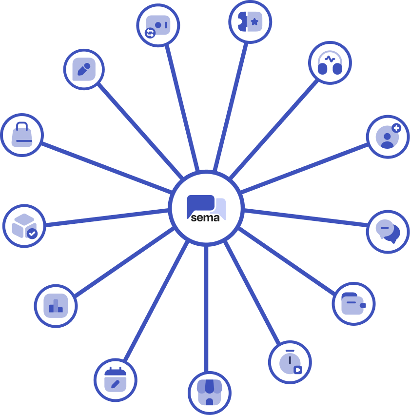
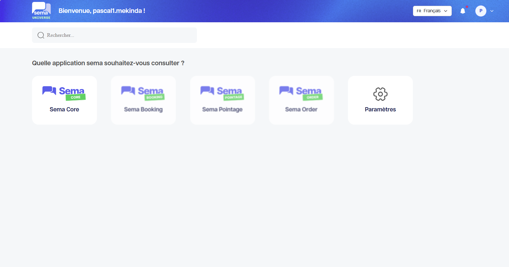

Présentation générale de Sema Universe
Sema Universe est l’écosystème Sema qui regroupe plusieurs produits destinés à accompagner les entreprises dans la gestion de leur relation client, leurs automatisations, leurs réservations, leurs commandes et leur suivi opérationnel.
L’objectif de Sema Universe est de proposer un environnement unique où les équipes peuvent communiquer avec leurs clients, automatiser des parcours, suivre les activités et exploiter les données générées par leurs opérations.
À quoi sert Sema Universe ?
Sema Universe permet de :
Centraliser les produits Sema dans un même écosystème ;
Accéder à Sema Core pour gérer les conversations, les scénarios, les flow et les tableaux de bord ;
Utiliser Sema Booking pour les réservations et rendez-vous ;
Utiliser Sema Orders pour le suivi des commandes ;
Utiliser Sema Pointage pour le suivi de présence et les rapports de pointage ;
Donner aux utilisateurs un accès adapté à leur rôle ;
Suivre les activités et les performances depuis des tableaux de bord.
{kind=link}

Produits de Sema Universe
1. Sema Core
Sema Core est le produit principal pour la relation client automatisée. Il couvre les conversations, le chatbot, le Scenario Builder, le Flow Builder, les contacts et le tableau de bord.
2. Sema Booking
Sema Booking sert à gérer les réservations, rendez-vous, disponibilités et demandes liées à la planification. Il permet de suivre les réservations, les créneaux, les clients et les opérations associées à la gestion des rendez-vous.
3. Sema Orders
Sema Orders sert à suivre les commandes, les statuts, les informations client et les opérations commerciales associées. Il permet de suivre les commandes, les produits, les clients et les opérations associées à la gestion commerciale.
4. Sema Pointage
Sema Pointage sert à suivre les présences, les employés, les sites, les horaires, les absences et les rapports de pointage. Il permet de suivre les présences, les employés, les sites et les opérations associées à la gestion du temps et des présences. Ce produit fourni des rapports de présences, d’absences, gestions des congés, suivi des horaires, avec la possibilité d’exporter les données pour les traitements RH.
{kind=link}

Rôles courants
Les droits disponibles peuvent varier selon votre organisation. Les rôles les plus fréquents sont :
1. Administrateur
L’administrateur configure l’espace de travail, les accès utilisateurs, les intégrations, les paramètres de compte et les éléments utilisés par les autres équipes. Il est responsable de la gestion globale de l’écosystème Sema Universe. Il est le point de contact pour les questions d’accès, de configuration et de support.
Il peut aussi être responsable de la création de scénarios, flows selon les besoins de son organisation.
2. Opérateur ou agent
L’agent traite les conversations, répond aux clients lors des interactions. Il peut aussi être responsable de la création de scénarios, flows selon les rôles et permissions définis par les administrateurs de son organisation. L’agent est le point de contact direct avec les clients, il gère les interactions, répond aux demandes et suit les conversations dans Sema Core.
Bon à savoir
Astuce
Si vous ne voyez pas un produit ou un module décrit dans cette documentation, cela peut venir de votre rôle, des permissions de votre compte ou du paramétrage de votre espace de travail. Les différents rôles et permissions sont crées par les administrateurs de votre organisation. Si vous pensez devoir accéder à un produit ou module spécifique, contactez votre administrateur pour vérifier vos droits d’accès.